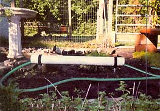

The following are two ideas I will stick with for the rest of my life because they are so inexpensive and effective:
1. Cut lengths of PVC pipe with rubber-coated galvanized pipe straps inverted to hold the pipe in the dirt. This has proven to be an excellent way to drag a hose through the garden without any damage to the plants.
2. Many warehouses dispose of plastic pallets. They last forever and can have several uses in your garden. Two plastic pallets raised 18 inches above the ground on pressure-treated wooden stakes have proven useful in several ways. I plant tomatoes underneath so that they grow up through the numerous slots, which eliminates the need for staking. Simply prune the plants and the tomatoes will lie on top. The pallets also provide an excellent surface for early season preparation; many small garden tools fit snugly in the slots.
ANTHONY V. SANTA MARIA
Jackson, New Jersey
|
 |
|
|